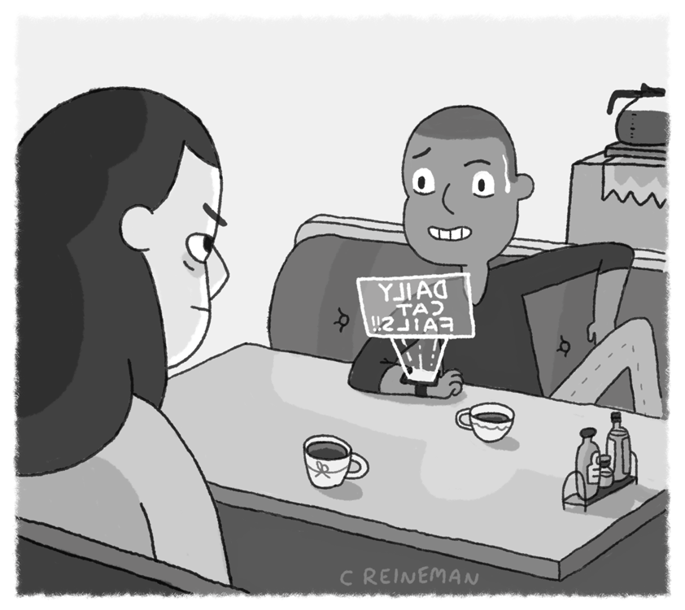
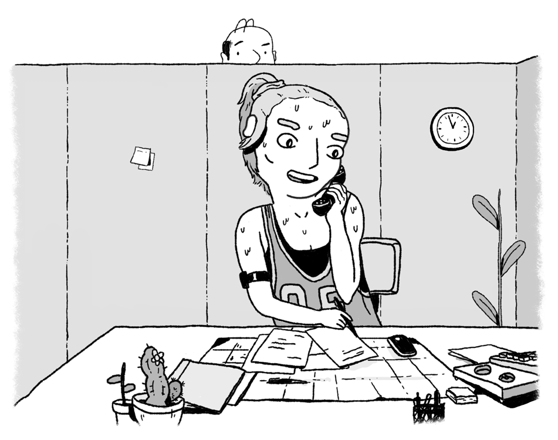
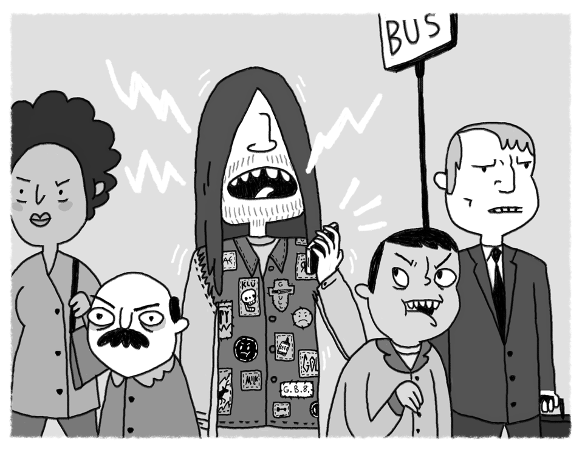
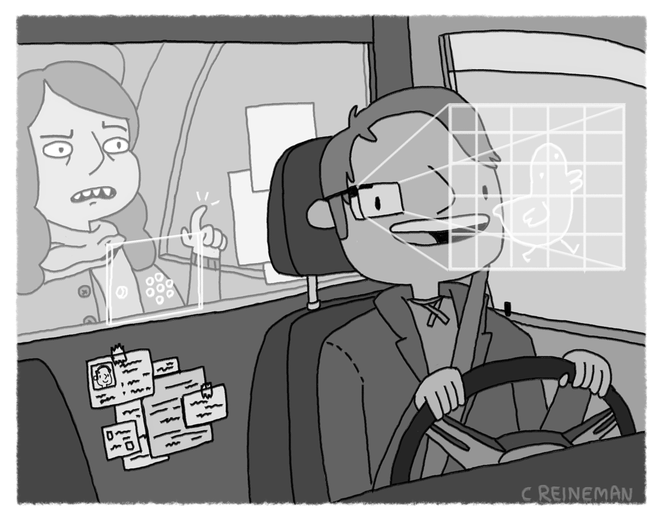
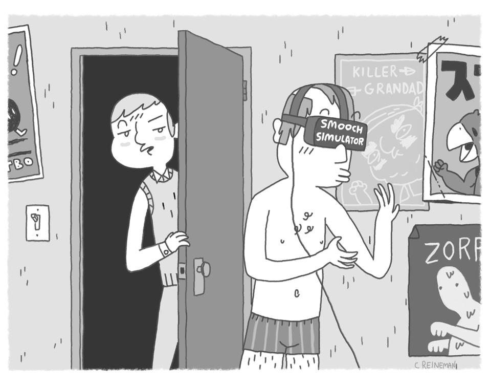

Wearable Etiquette
An illustrated guide for new technology.
Smartwatch
- Don't make others think you have somewhere to be. Avoid checking notifications while talking with a friend, waiting for the cashier, or similar situations.
- It's often more appropriate to wait and look at notifications on your phone, rather than look at them immediately on your watch.
- Talking to your smartwatch may make friends and strangers think you're addressing them. Only speak a command if you're alone, or after explaining what you're doing.

Fitness Tracker
- Your fitness tracker should match the occasion. Some designs are appropriate for formal business dress, some for sports or exercise. A few may be suitable for both.
- Don't frequently check your fitness tracker's display while chatting or walking with others. An exception may be made if you are using it to encourage others during a workout.

Smartphone
- When organizing plans at a bar or restaurant, place your phone on the table. Your friends who have already arrived will feel included when your receive a message from others in your group.
- Consider how important your conversation is before checking a notification on your phone. Either wait until later to check, or wait until a pause in conversation.
- Turn off notification sounds unless you're alone. They may disturb others around you.
- The restaurant is not a proper place to use your phone. Wait until after you leave to check your messages or make a call.

Google Glass
- Don't wear your Google Glass in public places.
- Wear your Google Glass while biking, skiing, or during other sports.
- Always remove your Google Glass before entering a public restroom.
- If you have a disability, it may be appropriate to wear your Google Glass in other contexts.

Drone
- Do not fly your drone close to people, pets or livestock.
- Check the map before flying your drone.
- Be conscious of other's privacy when flying your drone. Don't fly in areas where you might make someone uncomfortable. Remember, for many people drones are a fearful technology.
- Get permission from event organizers before flying your drone at races and sporting events.

Virtual Reality Headset
- Remove your VR headset to acknowledge when someone enters the room.
